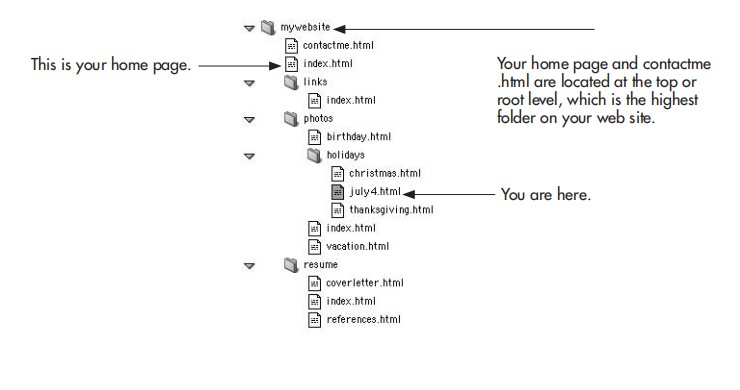
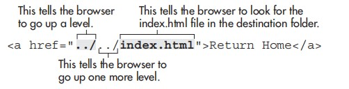
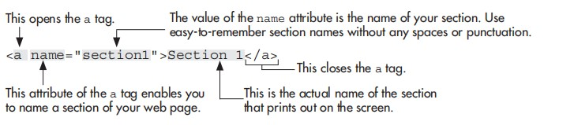
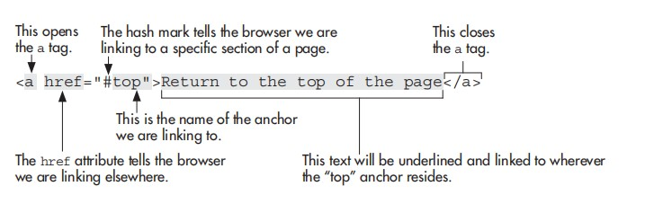
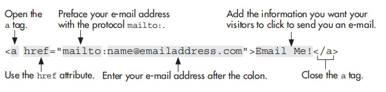
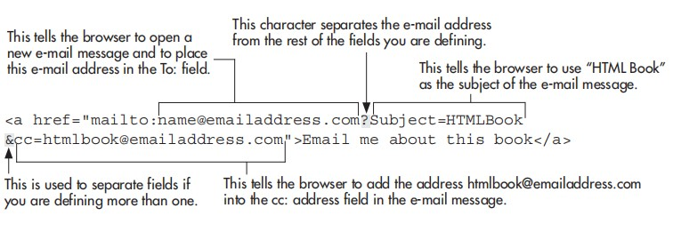

The crux of HTML is its capability to reference countless other pieces of information easily on the Internet. This is evident because the first two letters in the acronym HTML stand for hypertext, or text that is linked to other information.
HTML enables us to link to other web pages, as well as graphics, multimedia, e-mail addresses, newsgroups, and downloadable files. Anything you can access through your browser can be linked to from within an HTML document. In fact, one of the easiest ways to identify the URL of a page you want to link to is to copy it from the location or address toolbar in your web browser. You can then paste it directly into your HTML file.
You can add links to other web pages, whether they are part of your web site or someone else’s. To do so requires using the a tag:
<a href="http://www.google.com">Use this link to search Google.</a>
output:
Tip:
While adding a link to your favorite web site on your page is usually considered
acceptable, it is never acceptable to copy someone else’s content without their
permission. If you have any doubts, check with the site’s administrator whenever you’re
linking to a site that isn’t your own.
The a tag itself doesn’t serve much purpose without its attributes. The most common attribute is href, which is short for hypertext reference: it tells the browser where to find the information to which you are linking. Other attributes are name, title, accesskey , tabindex, and target, all of which are discussed in this chapter.
The text included in between the opening and closing a tags is what the person viewing your web page can click. In most cases, this text is highlighted as a different color from the surrounding text and is underlined.
In deciding what to use as the value of your href attribute, consider what type of link you
want to use. The following are the two basic types of links.
● Absolute
● Relative
Absolute links are those that include the entire pathname. In most cases, you use absolute links when linking to pages or sites that are not part of your own web site. Absolute links must include the protocol (such as http://) at the beginning of the link. For example, if you are linking from your web site to Yahoo!, you type http://www.yahoo.com as your link.
<a href="http://www.yahoo.com">Visit Yahoo!</a>
output:
Relative links are so called because you don’t include the entire pathname of the page to which
you are linking. Instead, the pathname you use is relative to the current page.
Relative links are most commonly used when you want to link from one page in your site
to another. The following is an example of what a relative link might look like:
<a href="contactme.html">Contact Me</a>
This link looks for the contactme.html file in the same folder that contains this page. If you
were linking to a file in another folder below the current one, the value of your href might
look like the following:
<a href="wendy/contactme.html">Contact Me</a>
If you need to link to a file in a folder above the folder your page is in, you can add “../”
for each directory up the tree. So, if the file you are linking to is two folders higher than the
one you are in, you might use
<a href="../../contactme.html">Contact Me</a>
Suppose you were building a web site for yourself and your family, using the following directory structure. You might remember something similar from Chapter 1, where we talked about file naming and the anatomy of a URL. Folders and files are indented to indicate that they are located on a different level.
You are working on the highlighted file: july4.html. This file is located two folders down from the home page (index.html) in a folder called holidays. If you want to link back to that home page from the july4.html page, you would include a relative link similar to this one:
When you link to a page, the browser knows what to look for because each page has a name. But sometimes you may want to link to a section of text within a page on your web site. To link to a section of a web page, you must first give that section a name.
An anchor is a place within a page that is given a special name, enabling you to link to it later. Without first naming a section, you cannot link to it. The following is an example of an anchor:

In this example, the phrase in between the opening and closing a tags is displayed in the
web page and labels the anchor as “Section 1.” If you prefer not to include a label for your
anchor, you can leave that space blank, as in the following example:
<a name="top"></a>
Here, you could use this invisible anchor at the top of your page, and then link to it from the bottom of your page. This would enable visitors to return to the top of a long page easily, with only one click and no scrolling.
To create the link to an anchor, you also use the a tag and the href attribute, as you would when creating any other type of link. To finish the link, you need to include a hash symbol (#) and the anchor name as the value of the href attribute.

NOTE:
If the anchor you are linking to is already visible on the screen (such as how the first
section is already visible in Figure 5-4), then the browser may not jump to that anchor.
Similarly, if the anchor being linked to is at the very bottom of the screen (as the third
section is in Figure 5-4), then the browser also may not jump to that anchor, according
to your screen size. The reason for this is, if the browser is already at the bottom of the
page, it cannot go any further and, therefore, can only try to get as close to the anchor
as possible.
If you need to create a link to a specific section with another page (not the one you are currently working on), then you use that page’s filename and the anchor name separated by a hash mark (#), as in the following example.
<a href="genealogy.html#intro">View names beginning with an "A" on our
genealogy page.</a>
In this case, the browser will first look for genealogy.html and then locate an anchor named “intro” on that page.
Although links to and within web pages are the most common types of links you’ll create, you can also link to other types of content on the Internet.
When you want to give someone easy access to your e-mail address, you can include it on your page as a mailto link. This means instead of using http:// in front of your link, you use the e-mail protocol mailto: to preface your e-mail address.
Clicking this link in a browser causes the visitor’s e-mail program to launch. Then it opens a new e-mail message and places your e-mail address in the To: box of that message.
NOTE:
For a mailto link to work, visitors to your web site must have an e-mail program (such
as Outlook or Mac Mail) set up on their computers. E-mail links like these may not work
if the visitor uses only a web-based e-mail service such as Gmail or Hotmail.
Some browsers will even let you add content to the subject and cc fields in the e-mail by entering additional text into the href value. To do so, you add a question mark after the end of your e-mail address, and type the word Subject followed by an equal sign (=), along with the word or phrase you’d like to use as your subject. This can be particularly useful in helping you distinguish mail sent through your web site from your other e-mail.
Remember, no spaces should be in the value of the href attribute, unless they are part of the subject line.
The Internet provides many companies with an easy way to transmit files to customers. For
example, suppose you purchased a piece of software to protect your computer against viruses.
Eventually, your software must be updated so that it can recognize new viruses. The quickest
and easiest way to obtain such an update is to download it from the company’s web site.
When you download files from the Internet that cannot be displayed in your web browser
(such as software applications and add-ons), you usually do so by accessing the company’s
FTP site.
FTP, which stands for File Transfer Protocol, is a way in which you send and receive files over the Internet. Many companies have both HTTP servers, which house their web site, and FTP servers, which house their downloadable files. To reference a file on an FTP site, you use the a tag and the href attribute with the FTP protocol, as in the following example:
<a href="ftp://sunsite.unc.edu/pub/">Visit the SunSite FTP</a>
Although some FTP sites are anonymous and don’t require a password for access, most are private. Secure content is typically made available to a limited audience, which is given specific credentials for accessing the content. You won’t be able to access a private FTP site without a qualified username and password. If you are linking to a private FTP site, you should also consider providing a way for visitors to register or sign up to receive a username and password.
Of course, in some cases, you could have downloadable files located right on your web server with your web page. These might be movies, sounds, programs, or other documents you want to make available to your visitors. You can link to these just as you would any other web page, keeping the proper file extension in mind.
<a href="http://www.wendywillard.com/downloads/baby.mov">
View the baby movie!
</a>